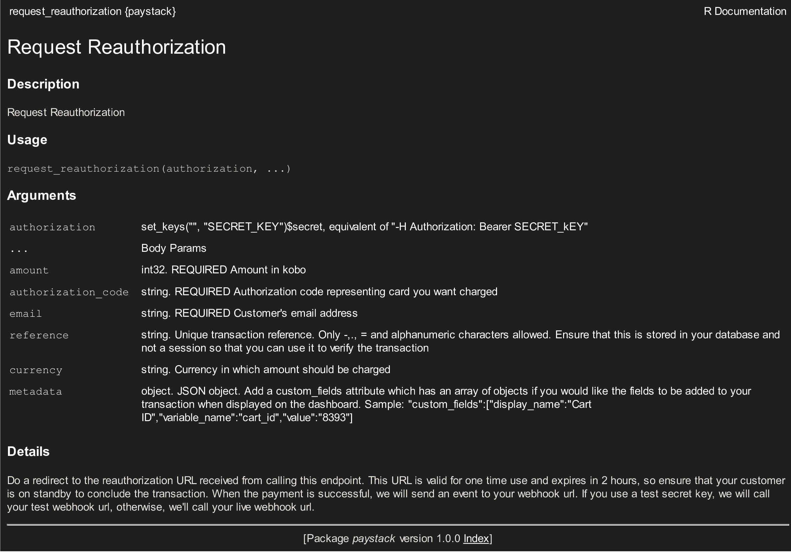

Chapter 3 Basics
3.1 General Function Structure
The API wrappers have the same general function structure
_function_name(authoriaztion, path_param, ...)- authorization : Header tag containing your secret or public keys
- path_param : A slug that’s added to the url to return a specific response
- … : Body parameters that also return a specific response
You could see a list of them at the Available Objects chapter
3.2 Getting Help
The functions are properly documented and you can view them from within RStudio by running ?_function_name
An example of this would be
?request_reauthorizationwhich would display

The body params could be found at this reference page.
ps: I’m still updating the documentation for the help pages in the package so you might need to check the main reference page linked above for the mean time.